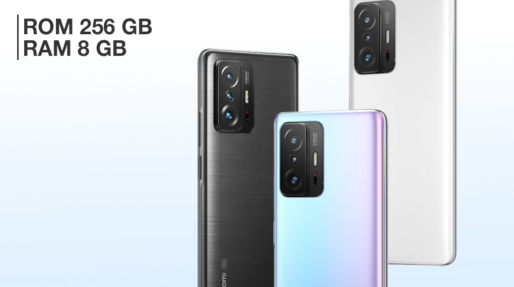
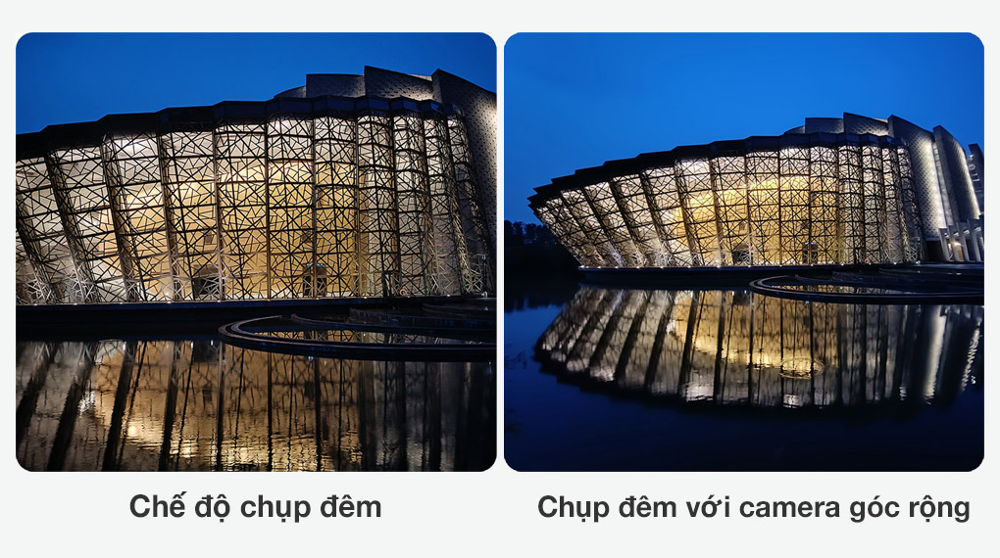
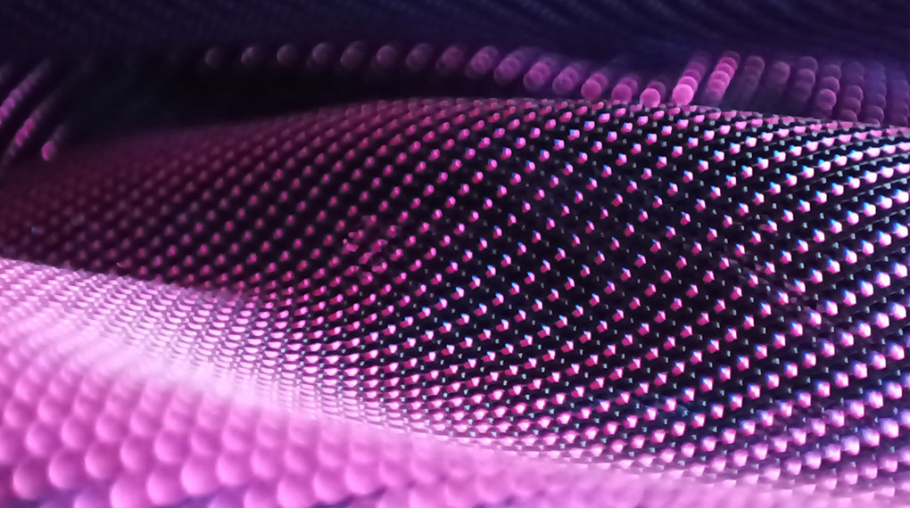
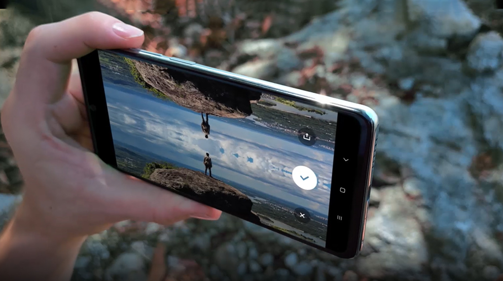
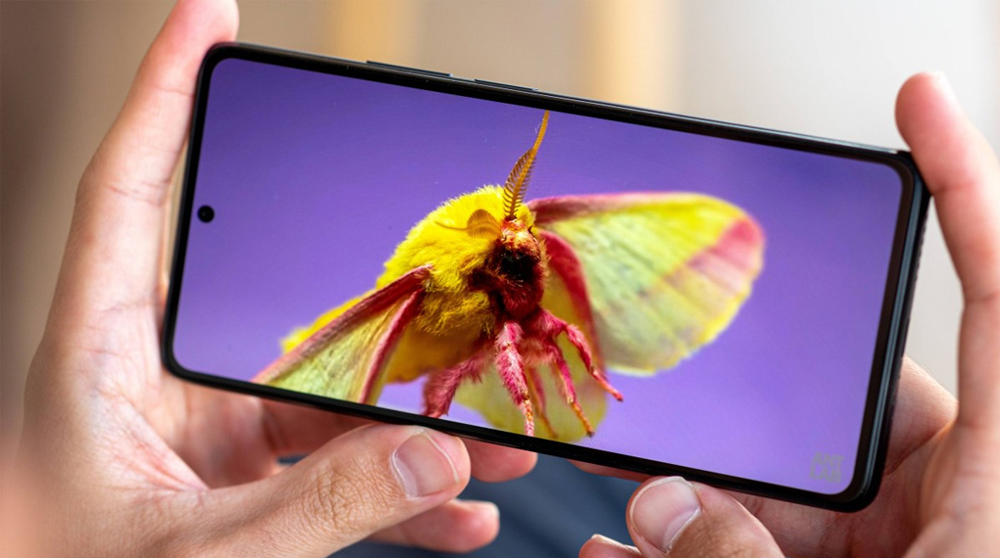

Điện thoại Xiaomi 11T 5G 256GB
Xiaomi 11T 5G sở hữu màn hình AMOLED, viên pin siêu khủng cùng camera độ phân giải 108 MP, chiếc smartphone này của Xiaomi sẽ đáp ứng mọi nhu cầu sử dụng của bạn, từ giải trí đến làm việc đều vô cùng mượt mà.
Cho ra những tác phẩm đầy chân thật với camera 108 MP
Xiaomi đã trang bị cho máy cụm 3 camera sau gồm camera chính 108 MP, camera góc rộng có độ phân giải 8 MP cùng camera telemacro 5 MP kết hợp cùng phần cứng bên trong cho khả năng lấy nét, thu sáng và zoom cực tốt để cho ra những bức ảnh chi tiết dù bạn chụp gần hay chụp xa.

Việc chụp ảnh phong cảnh khi đi du lịch cũng diễn ra vô cùng dễ dàng thông qua camera góc rộng 120 độ, mang đến cho bạn tấm hình toàn cảnh đầy ấn tượng, các góc của ảnh cũng không bị bóp hay méo quá nhiều.
Không dừng lại ở đó máy còn được trang bị thêm khả năng chụp đêm siêu rõ nét, làm cho khung cảnh ban đêm thông qua bức ảnh càng thêm chân thực.
Bạn sẽ có những bức ảnh chụp cận cảnh cực chi tiết, màu sắc trung thực thông qua ống kính telemacro với tiêu điểm chụp thích hợp khoảng 3 - 7 cm, khơi gợi sự sáng tạo của bạn bằng những tấm ảnh chụp cận cực chất, làm bật lên những nét đẹp ẩn đằng sau những chi tiết siêu nhỏ.
Ghi lại những điều thú vị trong cuộc sống của bạn tựa như một bộ phim điện ảnh với nhiều chế độ quay như Audio Zoom, Magic Zoom, Time Freeze,... thao tác điều chỉnh nhanh chóng với một cái chạm.
Camera trước 16 MP cùng các tính năng thông minh như: Làm đẹp, xóa phông, selfie ban đêm,... cho những bức ảnh của bạn thêm phần tươi mới, xinh đẹp không cần qua ứng dụng chỉnh sửa.
Sẵn sàng “chiến” mọi tựa game
Máy trang bị con chip MediaTek Dimensity 1200 8 nhân, được sản xuất trên tiến trình 6 nm cho mức xung nhịp tối đa là 3 GHz, mang đến một hiệu năng mạnh mẽ giúp máy chạy mượt các tựa game như: PUBG Mobile, Tốc Chiến,... hay chạy các phần mềm chỉnh sửa ảnh như: VSCO, PicsArt, Snapseed, Lightroom,...

Chip đồ họa Mali-G77 MC9 giảm 30% năng lượng tiêu thụ hơn thế hệ trước là Mali-G76. Chip này sử dụng các tập lệnh mới và hỗ trợ đầy đủ cho các API đồ họa, ví dụ như Vulkan API để bạn trải nghiệm game đồ hoạ đã mắt hơn.
Máy còn trang bị kết nối 5G bắt kịp xu thế của thị trường công nghệ, có tốc độ truy cập mạng nhanh và ổn định, đáp ứng nhu cầu truy cập internet tra cứu thông tin, giải trí, chơi game online mọi lúc mọi nơi.

Một chiếc điện thoại ngoài CPU thì không thể nào thiếu RAM và chiếc máy này sở hữu RAM 8 GB cho khả năng đa nhiệm mượt mà, và góp phần nâng cao khả năng xử lý của cả chiếc điện thoại.
Bộ nhớ trong 256 GB chuẩn UFS 3.1 cho tốc độ truy xuất dữ liệu nhanh chóng và có một không gian lưu trữ lớn để bạn có thể tha ga tải game, lưu ảnh hay video yêu thích mà không lo nhanh đầy bộ nhớ.
Có một mức giá chỉ thuộc dòng cận cao cấp, nhưng Xiaomi 11T lại cho bạn một hiệu năng đầy mạnh mẽ với chip Dimensity 1200 có kết nối 5G, một màn AMOLED sắc nét hay khả năng sạc nhanh 67 W vô cùng ấn tượng. Với Xiaomi 11T thiết bị sẵn sàng cùng bạn khám phá mọi thứ.